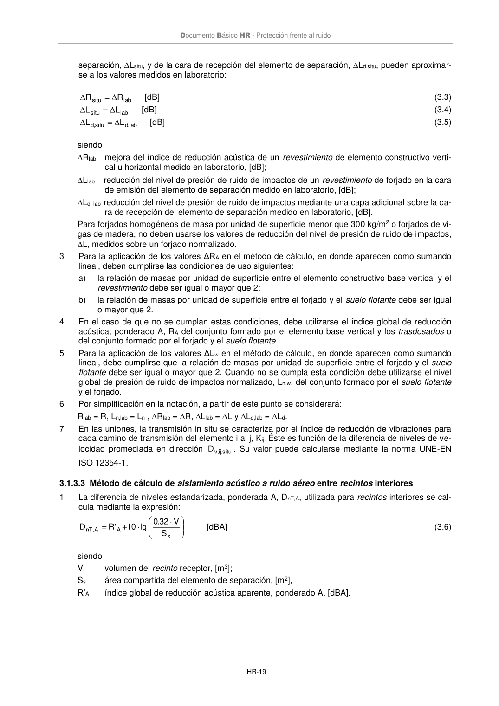
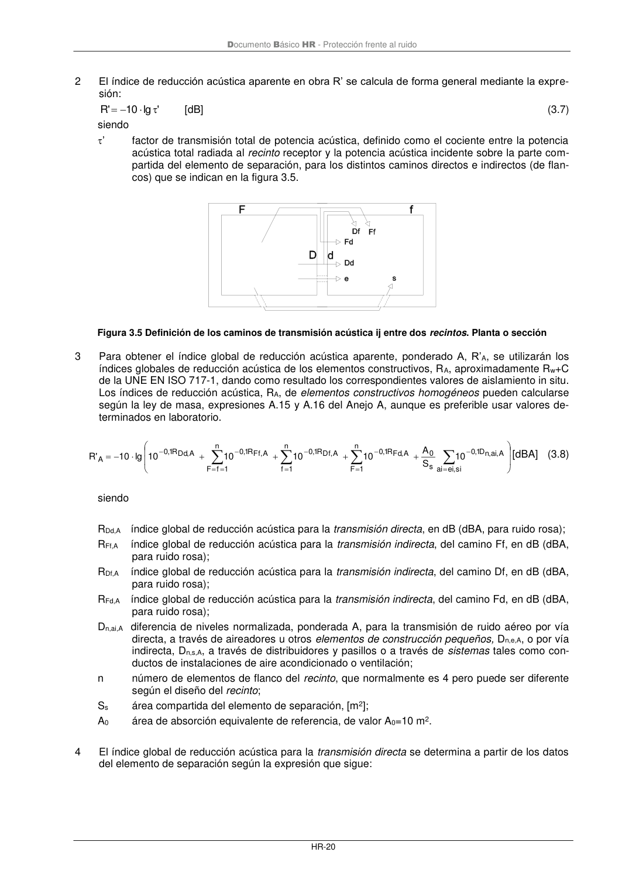

DB-HR · 3.1.3.3 Método de cálculo de aislamiento acústico a ruido aéreo entre recintos interiores · versión 2019-12-20 · capa oficial
Formatos: JSON compacto · Markdown · PDF fuente
Ámbito del documento · texto del ámbito · documento y tablas
ID técnico a0050 · PDF pág. 25-26 · jerarquía no validada por persona · contrastado con el literal de la página 25 (candidato tipográfico); no validado por persona · padre: a0047
3.1.3.3 Método de cálculo de aislamiento acústico a ruido aéreo entre recintos interiores 1 La diferencia de niveles estandarizada, ponderada A, DnT,A, utilizada para recintosinteriores se cal- cula mediante la expresión: + = s A A , nT S V 32 ,0 lg 10 ' R D [dBA] (3.6) siendo V volumen del recinto receptor, [m3]; Ss área compartida del elemento de separación, [m2], R’A índice global de reducción acústica aparente, ponderado A, [dBA]. Documento Básico HR - Protección frente al ruido HR-20 2 El índice de reducción acústica aparente en obra R’ se calcula de forma general mediante la expre- sión: ' lg 10 ' R − = [dB] (3.7) siendo ’ factor de transmisión total de potencia acústica, definido como el cociente entre la potencia acústica total radiada al recinto receptor y la potencia acústica incidente sobre la parte com- partida del elemento de separación, para los distintos caminos directos e indirectos (de flan- cos) que se indican en la figura 3.5. Figura 3.5 Definición de los caminos de transmisión acústica ij entre dos recintos. Planta o sección 3 Para obtener el índice global de reducción acústica aparente, ponderado A, R’A, se utilizarán los índices globales de reducción acústica de los elementos constructivos, RA, aproximadamente Rw+C de la UNE EN ISO 717-1, dando como resultado los correspondientes valores de aislamiento in situ. Los índices de reducción acústica, RA, de elementos constructivos homogéneos pueden calcularse según la ley de masa, expresiones A.15 y A.16 del Anejo A, aunque es preferible usar valores de- terminados en laboratorio. + + + + − =


PDF fuente redistribuible: copia fiel enlazada en esta página (SHA256 verificado).